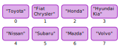
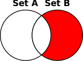
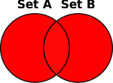
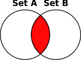
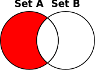
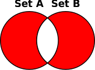
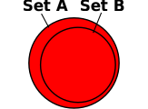
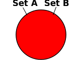
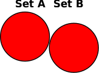

# This is an example of mutability
l = ["Hello"]
l.append("World")Container data types, part 1
Characterizing different containers
Ordered vs. unordered
Mutable vs. immutable
Hashable vs. unhashable
Mapping vs. non-mapping
What kinds of objects can the container contain?
Ordered vs. unordered
 |
|
Mutable vs. immutable
The value of a mutable object can change
Some operations on mutable objects change the value of the object
Examples:
append()method of lists; setting a key in a dictionary
All operations on immutable objects evaluate to new objects
Examples: multiplying two numbers;
strip()method of strings
Redefining a variable ≠ changing the value of an object
|
Hashable vs. unhashable
A hash function maps values to numbers
In a hash table, those values represent bins where items can be stored
Retrieving data from a hash table is quick
Compute the hash and look in the corresponding bin
Python uses hash tables to implement dictionaries and sets
Mutable objects in Python are unhashable
Their value could change, so their hash could change
Summary
In an ordered container, each value has a position in a sequence
A mutable object is an object whose value can change
Redefining a variable is not the same as changing the value of an object
Only immutable objects that don’t contain mutable objects are hashable in Python
Tuples
Immutable, ordered sequences
Made with commas
Empty tuples are made with parentheses
number_tuple = 1, 2, 3same_thing = 1, 2, 3,one_item_tuple = "item",empty = ()Sometimes, parentheses are needed for disambiguation
mylist.append(("some", "tuple"))
nested = (5, 3), (7, 9)Tuples can contain any objects
Tuples are hashable if their contents are hashable
Tuple interface
tuple()function converts other containers to tuplesTuples can be indexed and sliced
tpl = "George", "Washington", 1732, 2, 22
first_name = tpl[0]
birthdate = tpl[2:5]Tuples have an
index()method that returns the index of a specific item
tpl.index("Washington")Tuple packing, sequence unpacking
Returning multiple values
def get_position(angle, dist):
""" Given an angle in radians
and a distance from (0, 0),
calculate coordinates. """
x = cos(radians(angle)) * dist
y = sin(radians(angle)) * dist
return x, yUnpacking into separate variables
x1, y1 = get_position(60, 12)line = "INST 326"
dept, num = line.split(" ")Multiple assignment (use sparingly)
title, salary = "data scientist", 75_000Swapping values
a, b = b, aUnpacking in a
forloop
people = ("John", 21), ("Tamika", 19), ("Mei", 20)
for name, age in people:
print(f"{name} is {age} years old.")Tuples vs. lists
Tuples are useful when
the sequence won’t change
you need to group dissimilar values (e.g., name, age, salary)
you need a sequence to be a key in a dictionary or an item in a set
Lists are preferable when
the sequence needs to be able to change
the items in the sequence are all the same kind of thing (e.g., names)
Lists of tuples are common and useful
Summary
Tuples are immutable, ordered sequences that can contain any objects
Tuples are made with commas
Sometimes parentheses are needed to disambiguate
Can be used to return multiple values
Useful in conjunction with sequence unpacking
Dictionaries
Map keys to values for easy lookup
ID numbers to names
Countries to capital cities
Shortened URLs to full URLs
Mutable, unhashable
Dictionary keys are ordered and can only be hashable objects
Dictionary values can be any objects
Basic syntax
Creating an empty dictionary
{}dict()
Creating a dictionary with items
{key:value[,key:value,…]}
greeting = {"Amharic": "ጤና ይስጥልኝ",
"English": "hello",
"French": "bonjour",
"Korean": "안녕하세요"
"Mandarin": "你好",
"Spanish": "hola",
"Urdu": "السلام علیکم"}Accessing an item in a dictionary
dict
[key]dict
.get(key[, default])
print(greeting["Spanish"])
print(greeting.get("Manx", "hello"))Adding or updating a key/value pair
dict
[key]=value
greeting["Samoan"] = "talofa"
greeting["English"] = "hi"Iterating over dictionaries, part 1
As an iterable, a dictionary is treated as a sequence of keys
for language in greetings:
print(f"In {language}, you greet someone by saying {greetings[language]}.")languages = list(greetings)if "Amharic" in greetings:
print("I know an Amharic greeting")There is also a dict
.keys()method, but it’s not really needed
Iterating over dictionaries, part 2
If you want to iterate over key/value pairs, use the dict
.items()method
for language, greeting in greetings.items():
print(f"In {language}, you greet someone by saying {greeting}.")greetings_contents = list(greetings.items())If you just need the values, use the dict
.values()method
for greeting in greetings.values():
print(f"{greeting.title()} is a greeting.")greetings_list = list(greetings.values())Removing keys from a dictionary
deldict[key]
del greetings["French"]dict
.pop(key)
french = greetings.pop("French")Copying a dictionary
dict
.copy()
greetings_backup = greetings.copy()Basic use of a dictionary
electricity_prices = {
"super off peak": 0.09,
"off peak": 0.1,
"peak": 0.17
}
tier = "peak"
amt = 3.12
price = electricity_prices[tier] * amtCounting with a dictionary
words = ['in', 'the', 'end', "it's", 'not', 'the', 'years', 'in', 'your',
'life', 'that', 'count', "it's", 'the', 'life', 'in', 'your', 'years',
'-abraham', 'lincoln']
counts = dict()
for word in words:
counts[word] = counts.get(word, 0) + 1
for word in counts():
print(f"{word} occurred {word[count]} times")Summary
Dictionaries are mutable, unhashable mappings of keys to values
Keys are ordered and must be hashable objects
Values can be any objects
New dictionaries are made with
{}ordict(); keys accessed/set with[]As iterables, dictionaries behave as a sequence of keys
Useful methods/syntax:
dict
.get(key[,default])• dict.pop(key)•deldict[key]dict
.items()• dict.values()• dict.keys()dict
.copy()
Sets
Unordered, mutable, unhashable collections of unique values
All about membership: you’re either in or you’re out
No duplicates
Come with a rich set of operations
Useful for solving a lot of problems
Eliminating duplicates / finding unique values
Filtering groups of values
Handling groups of values irrespective of order
Basic syntax
Creating an empty set:
set()Creating a non-empty set:
{value[,value …]}
pets = {"dog", "cat", "turtle", "pigeon"}Converting an existing collection of values to a set:
set(collection)
pet_list = ["dog", "cat", "turtle", "pigeon"]
pet_set = set(pet_list)Set operations that result in sets
Remember Venn diagrams?

Two ways to perform set operations:
Methods
Operators
Two kinds of results:
"Basic" operations result in new sets
"In-place" operations change the value of an existing set
Union

Basic method:
union()set1
.union(set2)
Basic operator:
|set1
|set2
In-place method:
update()set1
.update(set2)
In-place operator:
|=set1
|=set2
Intersection

Basic method:
intersection()set1
.intersection(set2)
Basic operator:
&set1
&set2
In-place method:
intersection_update()set1
.intersection_update(set2)
In-place operator:
&=set1
&=set2
Difference

Basic method:
difference()set1
.difference(set2)
Basic operator:
-set1
-set2
In-place method:
difference_update()set1
.difference_update(set2)
In-place operator:
-=set1
-=set2
Symmetric difference

Basic method:
symmetric_difference()set1
.symmetric_difference(set2)
Basic operator:
^set1
^set2
In-place method:
symmetric_difference_update()set1
.symmetric_difference_update(set2)
In-place operator:
^=set1
^=set2
Subsets and supersets


Subsethood
set1
.issubset(set2)set1
<=set2
Proper subsethood
set1
<set2
Supersethood
set1
.issuperset(set2)set1
>=set2
Proper supersethood
set1
>set2
Disjointness and equality
Disjoint sets

set1.isdisjoint(set2)
Equal sets
set1 == set2
Other things you can do with sets
Get the size (cardinality) of the set
len(set)
Check for membership or non-membership in the set
item
insetitem
not inset
Add a single item
set
.add(item)
Remove an item
set
.remove(item)set
.discard(item)set
.pop()
Remove all items
set
.clear()
Frozensets
A frozenset is an immutable, hashable set
Can’t add or remove values from a frozenset
All basic (non-in-place) set operations work on frozensets
No special syntax for creating frozensets; just use the
frozenset()class to convert any collection into a frozenset
pets = frozenset({"dog", "cat", "turtle", "pigeon"})Sets and frozensets play nice together
mammals = {"dog", "cat", "horse", "whale", "gorilla"}
pet_mammals = pets & mammalsSummary
Sets and frozensets are unordered collections of unique values
Sets are mutable and unhashable; made with
{}orset()Frozensets are immutable and hashable; made with
frozenset()
Putting things in a set
set
.add()
Taking things out of a set
set
.remove()• set.discard()set
.pop()• set.clear()
Set operations
Union
Intersection
Difference
Symmetric difference
Set relationships
Subset, proper subset
Superset, proper superset
Disjoint sets
Equal sets
Applications of sets: getting unique values
waitlist_101 = ["Jon Rodgers", "Leona Salazar", "Drew Buchanan", "Enrique Santiago"]
waitlist_102 = ["Ebony Saunders", "Drew Buchanan", "Leona Salazar", "Joy Akinde"]
waitlist_103 = ["Deondre Jones", "Joy Akinde", "Enrique Santiago"]
waitlisted = set(waitlist_101) | set(waitlist_102) | set(waitlist_103)
num_unique = len(waitlisted)Applications of sets: finding a subset
clients = ["Gears, Inc.", "Sprocketworld", "Bevel Warehouse",
"ACME Cogs", "Pinion Palace", "Helixity", "Torque LLC"]
appts = {"Sprocketworld": "Oct. 7",
"Torque, LLC": "Oct .8",
"Gears, Inc.": "Oct. 9",
"Pinion Palace": "Oct. 11"}
clients_to_call = set(clients) - set(appts)Applications of sets: handling groups of values irrespective of order
Snippet of data file: Maryland v Texas Akron v Penn State Nevada v Northwestern Michigan v Florida Louisville v Purdue Arkansas State v Nebraska Ohio v Purdue Duke v Maryland ... | Code: |